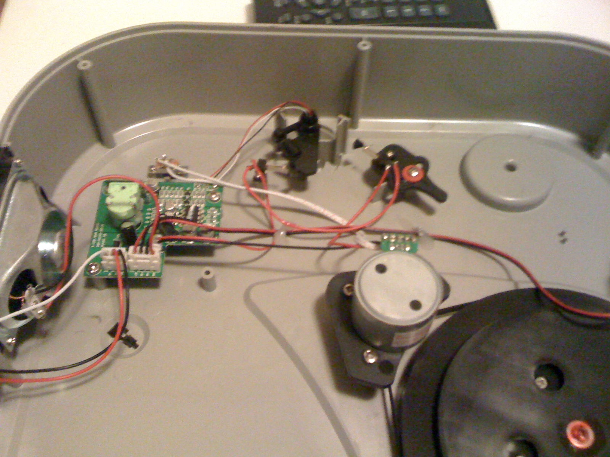

Hacking Vertical Vinyl
January 6, 2012
Notes on adding a phono jack to the ion vertical vinyl.
Notes on adding a phono jack to the ion vertical vinyl.
As a christmas present, I received an Ion Vertical Vinyl record player. It’s a very light, wall mountable record player. It includes a pair of built-in speakers and is battery powered so that no unsightly wires need to be attached.

While it’s seemingly quite able to play vinyl while hanging without skipping, the fidelity of the internal speakers left much to be desired, even for my decidedly non-audiophiliac ears. Unfortunately, on the stock unit there is no line-out nor any other way to get sound data out of the unit except the cheap internal speakers.
Luckily, it’s quite easy to add this functionality yourself. The back is cardboard in the classic consumer audio equipment tradition, and comes off easily with a few screws. Inside you’ll find a sparse, minimalist collection of components - a 12V DC motor driving the belt, along with a small board containing some analog components.
Adding a line out is as simple as cutting the wires to the speakers and soldering them to phono jacks.
It sounds like there’s a little EQ going on inside the record player, but sending the line to a regular phono pre-amp seems to work fine for me.